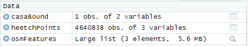

Profilage des chauffeurs¶
Membres du groupe¶
Membres du groupe
Importer les packages¶
getwd()
getwd() est une fonction qui permet de récupérer le chemin absolu du répertoire de travail actuel.
Output
[1] "C:/Users/abdel/Documents"
Importer la data¶
Importer la data
-
Le premier fichier,
casabound.geojson, est lu à l'aide de la fonction st_read() de la bibliothèque sf. Cette fonction est utilisée pour lire des fichiers de données spatiales tels que des fichiers shapefile, des fichiers GeoJSON, etc. Ici, il lit un fichier GeoJSON nommé "casabound.geojson" et stocke les données dans un objet nommé casaBound. -
Le deuxième fichier,
heetchmarchcrop.Rds, est lu à l'aide de la fonction readRDS(). Cette fonction est utilisée pour lire des fichiers de données R sauvegardés en utilisant la fonction saveRDS(). Ici, il lit un fichier RDS nommé heetchmarchcrop.Rds et stocke les données dans un objet nommé heetchPoints. -
Le troisième fichier,
osmfeatures.Rds, est également lu à l'aide de la fonction readRDS(). Comme le deuxième fichier, il s'agit d'un fichier RDS et est lu dans un objet nommé osmFeatures.
Output

Définir la problématique¶
Problématique
A travers ce travail, nous cherchons à identifier les conducteurs qui respectent les règles de conduite et à évaluer leur sécurité sur la route, pour ce faire, nous nous concentrerons sur le calcul de la vitesse moyenne des conducteurs.
Résoudre la problématique¶
Nombre de chauffeurs
Ce code R length(unique(heetchPoints$driver_id)) calcule le nombre de valeurs uniques dans la colonne driver_id de l'objet heetchPoints.
La fonction unique() est utilisée pour extraire les valeurs uniques de la colonne driver_id. Ensuite, la fonction length() est utilisée pour renvoyer le nombre d'éléments dans le vecteur résultant.
| Nombre de chauffeurs | |
|---|---|
Output
[1] 1309
Défenir la fonction qui calcul la moyenne des vitesses d'un chauffeur sur un jour
Le code R présenté ci-dessous est une fonction appelée my_function, qui prend un argument id_driver. La fonction effectue les opérations suivantes:
-
Initialise une variable i à zéro.
-
Affiche la valeur de i.
-
Filtre la table heetchPoints en fonction de la valeur id_driver.
-
Trier la table driver en fonction de la colonne location_at_local_time.
-
Effectue une projection de la table driver_tri dans une projection cartographique spécifique (crs = 26191).
-
Calcule les distances entre tous les points dans la table driver_tri à l'aide de la fonction st_distance.
-
Calcule la différence de temps entre chaque deux points consécutifs dans la table driver_tri à l'aide de la fonction difftime.
-
Filtre la table driver_tri pour conserver uniquement les points ayant une différence de temps entre 0.016 et 0.025 heures.
-
Calcule la vitesse entre chaque deux points successifs en divisant la distance sur le temps.
-
Filtre la table driver_tri_2 pour ne conserver que les points ayant une vitesse entre 6 et 120 km/h.
-
Retourne la moyenne des vitesses de la table driver_tri_3.
Calculons la moyenne des vitesse de tous les chauffeurs
Le code ci-dessous commence par créer un objet de type data.frame appelé vitesse_table à l'aide de la fonction data.frame().
Ensuite, la boucle for est utilisée pour itérer sur une liste de trois valeurs de l'ID de conducteur driver_id comprises entre 10 et 12 inclusivement.
À chaque itération, le code crée une liste driver_list avec deux éléments : le premier est l'ID du conducteur et le deuxième est le résultat de la fonction my_function() avec l'ID du conducteur en argument.
Enfin, la fonction rbind() est utilisée pour ajouter la liste driver_list en tant que nouvelle ligne à la fin du data.frame vitesse_table.
Ainsi, à la fin de la boucle for, vitesse_table contiendra une liste de conducteurs avec leurs ID et la valeur de la vitesse obtenue à l'aide de la fonction my_function().